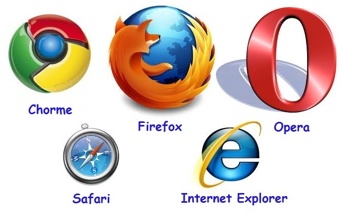

"Conceptos introductorios de web"
Medina Beltran Carlos Alberto
Centro de Estudios
Practica #2
"Datos Personales"
Medina Beltran Carlos Alberto, B.C.
Link para mas informacion
Conceptos
- Red Computacional
- Internet
- Navegador
- Buscador
- HTTP y HTTPS
- HTML
- URI y URL
- Dominio de internet
- Direccion IP
- Router
- VPN
- Ancho de banda
- Escalabilidad
- WIFI
- Red social
- La nube
- Red computacional:Conjunto de computadoras conectadas entre si para el intercambio y administracion de datos a travez de esta.
 Regresar
Regresar
- Internet:Red de equipos de computo que se comunican etre si empleando un lenguaje comun.
 Regresar
Regresar
- Navegador:Programa que permite vizualizar paginas de internet.

Regresar
- Buscador:Pagina de internet que te permite buscar paginas de internet.
Regresar
- HTTP y HTTPS:HTTP Hyper Text Transfer Protocol Protocolo de red para publicar paginas de internet, HTTPS indica que se esta usando proteccion al transferir informacion.
 Regresar
Regresar
- HTML:Hyper Text Markup Language lenguaje usado por los navegadores para mostrar paginas de internet.
 Regresar
Regresar
- URI y URL:URI Uniform Resource Identifire Identifica recursos de internet URL Uniform Resource Locator Nombra recursos en internet.
 Regresar
Regresar
- Dominio de internet:Nombre que sirve para identificar direcciones de computadoras conectadas a internet.
 Regresar
Regresar
- Direccion IP:Numero dividido en 4 partes usado como identificador unico.
Regresar
- Router:Hardware que funciona como semaforo para controlar las señales que trafican dentro de una red.
 Regresar
Regresar
- VPN:Virtual Private Network Red de comunicaciones inalambricas que usa infraestructuras de internet para proveer conexiones remotas a redes de una organizacion.
 Regresar
Regresar
- Ancho de banda:Medida que define la velocidad de tu conexion a internet.
 Regresar
Regresar
- Escalabilidad:Propiedad de aumentar la capacidad de tamaño de un sistema sin comprometer su funcionamiento y calidad normales.
 Regresar
Regresar
- WiFi:Marca registrada que nombra la tecnologia con la que se conectan dispositivos elctronicos de manera inalambrica.
Regresar
- Red social:Pagina web donde se intercambia informacion personal y contenido multimedia.
Regresar
- La nube:Almacenamiento masivo de datos en servidores.
 Regresar
Regresar